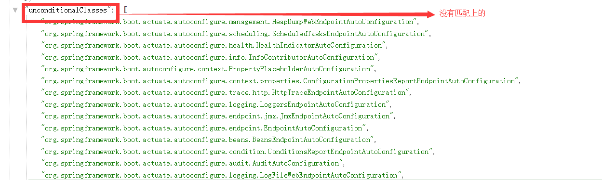

第二 节:springboot整合篇(飞机篇)
1:springboot整合jdbc
1.1:导入的maven依赖
<dependency> <groupId>org.springframework.boot</groupId> <artifactId>spring-boot-starter-jdbc</artifactId> </dependency> <dependency> <groupId>mysql</groupId> <artifactId>mysql-connector-java</artifactId> <scope>runtime</scope> </dependency>
1.2:配置相关数据源:
spring: datasource: username: root data-password: 123456 url: jdbc:mysql://47.104.128.12:3306/tuling-vip driver-class-name: com.mysql.jdbc.Driver
1.3：测试
@Autowired
private DataSource dataSource;
@Test
public void contextLoads() {
}
@Test
public void testDbType() {
System.out.println("自动装配数据源的类型:"+dataSource.getClass());
}1.4)jdbc 以及数据源的自动装配原理
1.4.1)数据源的自动装配
/**
* Tomcat Pool DataSource configuration.
*/
@ConditionalOnClass(org.apache.tomcat.jdbc.pool.DataSource.class)
@ConditionalOnMissingBean(DataSource.class)
@ConditionalOnProperty(name = "spring.datasource.type", havingValue = "org.apache.tomcat.jdbc.pool.DataSource", matchIfMissing = true)
static class Tomcat {
//配置tomcat 连接池的数据源
@Bean
@ConfigurationProperties(prefix = "spring.datasource.tomcat")
public org.apache.tomcat.jdbc.pool.DataSource dataSource(
DataSourceProperties properties) {
org.apache.tomcat.jdbc.pool.DataSource dataSource = createDataSource(
properties, org.apache.tomcat.jdbc.pool.DataSource.class);
DatabaseDriver databaseDriver = DatabaseDriver
.fromJdbcUrl(properties.determineUrl());
String validationQuery = databaseDriver.getValidationQuery();
if (validationQuery != null) {
dataSource.setTestOnBorrow(true);
dataSource.setValidationQuery(validationQuery);
}
return dataSource;
}
}
/**
* Hikari DataSource configuration.
*/
@ConditionalOnClass(HikariDataSource.class)
@ConditionalOnMissingBean(DataSource.class)
@ConditionalOnProperty(name = "spring.datasource.type", havingValue = "com.zaxxer.hikari.HikariDataSource", matchIfMissing = true)
static class Hikari {
@Bean
@ConfigurationProperties(prefix = "spring.datasource.hikari")
public HikariDataSource dataSource(DataSourceProperties properties) {
HikariDataSource dataSource = createDataSource(properties,
HikariDataSource.class);
if (StringUtils.hasText(properties.getName())) {
dataSource.setPoolName(properties.getName());
}
return dataSource;
}
}
/**
* DBCP DataSource configuration.
*/
@ConditionalOnClass(org.apache.commons.dbcp2.BasicDataSource.class)
@ConditionalOnMissingBean(DataSource.class)
@ConditionalOnProperty(name = "spring.datasource.type", havingValue = "org.apache.commons.dbcp2.BasicDataSource", matchIfMissing = true)
static class Dbcp2 {
@Bean
@ConfigurationProperties(prefix = "spring.datasource.dbcp2")
public org.apache.commons.dbcp2.BasicDataSource dataSource(
DataSourceProperties properties) {
return createDataSource(properties,
org.apache.commons.dbcp2.BasicDataSource.class);
}
}
//通过spring.dataSource.tpye 来指定装配的数据源
@ConditionalOnMissingBean(DataSource.class)
@ConditionalOnProperty(name = "spring.datasource.type")
static class Generic {
@Bean
public DataSource dataSource(DataSourceProperties properties) {
return properties.initializeDataSourceBuilder().build();
}
}
//用于整合druid 等数据源配置的
public DataSourceBuilder<?> initializeDataSourceBuilder() {
return DataSourceBuilder.create(getClassLoader()).type(getType())
.driverClassName(determineDriverClassName()).url(determineUrl())
.username(determineUsername()).password(determinePassword());
}
public T build() {
//数据源类型
Class<? extends DataSource> type = getType();
//t通过反射创建数据源
DataSource result = BeanUtils.instantiateClass(type);
maybeGetDriverClassName();
bind(result);
return (T) result;
} 1.4.2)jdbcTemplate自动装配
@Configuration
@ConditionalOnClass({ DataSource.class, JdbcTemplate.class })
@ConditionalOnSingleCandidate(DataSource.class)
@AutoConfigureAfter(DataSourceAutoConfiguration.class)
@EnableConfigurationProperties(JdbcProperties.class)
public class JdbcTemplateAutoConfiguration {
@Configuration
static class JdbcTemplateConfiguration {
private final DataSource dataSource;
private final JdbcProperties properties;
JdbcTemplateConfiguration(DataSource dataSource, JdbcProperties properties) {
this.dataSource = dataSource;
this.properties = properties;
}
//jdbcTemplate 配置
@Bean
@Primary
@ConditionalOnMissingBean(JdbcOperations.class)
public JdbcTemplate jdbcTemplate() {
JdbcTemplate jdbcTemplate = new JdbcTemplate(this.dataSource);
JdbcProperties.Template template = this.properties.getTemplate();
jdbcTemplate.setFetchSize(template.getFetchSize());
jdbcTemplate.setMaxRows(template.getMaxRows());
if (template.getQueryTimeout() != null) {
jdbcTemplate
.setQueryTimeout((int) template.getQueryTimeout().getSeconds());
}
return jdbcTemplate;
}
}
@Configuration
@Import(JdbcTemplateConfiguration.class)
static class NamedParameterJdbcTemplateConfiguration {
@Bean
@Primary
@ConditionalOnSingleCandidate(JdbcTemplate.class)
@ConditionalOnMissingBean(NamedParameterJdbcOperations.class)
public NamedParameterJdbcTemplate namedParameterJdbcTemplate(
JdbcTemplate jdbcTemplate) {
return new NamedParameterJdbcTemplate(jdbcTemplate);
}
}
} 测试:
@Autowired
private JdbcTemplate jdbcTemplate;
@Test
public void testDbType() {
System.out.println("自动装配数据源的类型:"+dataSource.getClass());
}
@Test
public void testJdbcTemplate() {
List<Map<String,Object>> employeeList = jdbcTemplate.queryForList("select * from employee");
System.out.println(employeeList.size());
}
2.springboot如何优雅的整合druid +监控
2.1)加入druid的依赖
<dependency> <groupId>com.alibaba</groupId> <artifactId>druid</artifactId> <version>1.1.10</version> </dependency> //自定义属性绑定配置 <dependency> <groupId>org.springframework.boot</groupId> <artifactId>spring-boot-configuration-processor</artifactId> <optional>true</optional> </dependency>
2.2）配置druid的数据源属性
我们发现上面部分 红框 部分是显示黄色，在datasource.properties的文件中，没有属性进行一一映射
所以我们看到的带红框部分是没有映射到数据源中.
2.3)解决办法（优雅）就是我们自己配置一个druid数据源
spring: datasource: druid: username: root password: 123456 url: jdbc:mysql://47.104.128.12:3306/tuling-vip driverClassName: com.mysql.jdbc.Driver initialSize: 5 minIdle: 5 maxActive: 20 maxWait: 60000 timeBetweenEvictionRunsMillis: 60000 minEvictableIdleTimeMillis: 300000 validationQuery: SELECT 1 FROM DUAL testWhileIdle: true testOnBorrow: false testOnReturn: false poolPreparedStatements: true # 配置监控统计拦截的filters，去掉后监控界面sql无法统计，'wall'用于防火墙 filters: stat,wall,log4j maxPoolPreparedStatementPerConnectionSize: 20 useGlobalDataSourceStat: true connectionProperties: druid.stat.mergeSql=true;druid.stat.slowSqlMillis=500
对应的接受配置类(省略了getSet方法....)
@ConfigurationProperties(prefix = "spring.datasource.druid") //扫描配置类的属性前缀
public class DruidDataSourceProperties {
private String username;
private String password;
private String jdbcUrl;
private String driverClassName;
private Integer initialSize;
private Integer maxActive;
private Integer minIdle;
private long maxWait;
private boolean poolPreparedStatements;
}
自己定制一个druid的配置类
@Configuration
@EnableConfigurationProperties(value = DruidDataSourceProperties.class)
public class DruidDataSourceConfig {
@Autowired
private DruidDataSourceProperties druidDataSourceProperties;
@Bean
public DataSource dataSource() {
System.out.println(druidDataSourceProperties);
DruidDataSource druidDataSource = new DruidDataSource();
druidDataSource.setUsername(druidDataSourceProperties.getUsername());
druidDataSource.setPassword(druidDataSourceProperties.getPassword());
druidDataSource.setUrl(druidDataSourceProperties.getJdbcUrl());
druidDataSource.setDriverClassName(druidDataSourceProperties.getDriverClassName());
druidDataSource.setInitialSize(druidDataSourceProperties.getInitialSize());
druidDataSource.setMinIdle(druidDataSourceProperties.getMinIdle());
druidDataSource.setMaxActive(druidDataSourceProperties.getMaxActive());
druidDataSource.setMaxWait(druidDataSourceProperties.getMaxWait());
druidDataSourceProperties.setPoolPreparedStatements(druidDataSourceProperties.isPoolPreparedStatements());
return druidDataSource;
}
}再来查看对应的数据源的属性 已经成功的映射到数据源中
2.4)配置数据源监控，配置一个statViewSerlvet(后端管理) WebStatFilter sql监控
/**
* 配置druid管理后台的servlet
* @return
*/
@Bean
public ServletRegistrationBean statViewSerlvet() {
ServletRegistrationBean bean = new ServletRegistrationBean(new StatViewServlet(),"/druid/*");
Map<String,Object> initParameters = new HashMap<>();
initParameters.put("loginUsername","admin");
initParameters.put("loginPassword","123456");
bean.setInitParameters(initParameters);
return bean;
}
@Bean
public FilterRegistrationBean filterRegistrationBean() {
FilterRegistrationBean filterRegistrationBean = new FilterRegistrationBean(new WebStatFilter());
filterRegistrationBean.setUrlPatterns(Arrays.asList("/*"));
Map<String,Object> initParams = new HashMap<>();
initParams.put("exclusions","*.js,*.css,/druid/*");
filterRegistrationBean.setInitParameters(initParams);
return filterRegistrationBean;
}监控访问路径:http://localhost:8080/druid/
3:springboot整合 mybaits
3.1) 导入maven依赖
<dependency> <groupId>org.springframework.boot</groupId> <artifactId>spring-boot-starter-jdbc</artifactId> </dependency> <dependency> <groupId>org.springframework.boot</groupId> <artifactId>spring-boot-starter-web</artifactId> </dependency> <dependency> <groupId>org.mybatis.spring.boot</groupId> <artifactId>mybatis-spring-boot-starter</artifactId> <version>2.0.0</version> </dependency> <dependency> <groupId>mysql</groupId> <artifactId>mysql-connector-java</artifactId> <scope>runtime</scope> <version>5.1.46</version> </dependency>
3.2)让我们看下mybatis自动配置类给我们配置了什么组件
①:导入了SqlSessionFactory
②：导入了sqlSessionTemplate
③：导入了mapperScanner
@org.springframework.context.annotation.Configuration
@ConditionalOnClass({ SqlSessionFactory.class, SqlSessionFactoryBean.class })
@ConditionalOnSingleCandidate(DataSource.class)
@EnableConfigurationProperties(MybatisProperties.class)
@AutoConfigureAfter(DataSourceAutoConfiguration.class)
public class MybatisAutoConfiguration implements InitializingBean {
1:自动装配了 sqlSessionFactory
@Bean
@ConditionalOnMissingBean
public SqlSessionFactory sqlSessionFactory(DataSource dataSource) throws Exception {
SqlSessionFactoryBean factory = new SqlSessionFactoryBean();
factory.setDataSource(dataSource);
factory.setVfs(SpringBootVFS.class);
if (StringUtils.hasText(this.properties.getConfigLocation())) {
factory.setConfigLocation(this.resourceLoader.getResource(this.properties.getConfigLocation()));
}
applyConfiguration(factory);
if (this.properties.getConfigurationProperties() != null) {
factory.setConfigurationProperties(this.properties.getConfigurationProperties());
}
if (!ObjectUtils.isEmpty(this.interceptors)) {
factory.setPlugins(this.interceptors);
}
if (this.databaseIdProvider != null) {
factory.setDatabaseIdProvider(this.databaseIdProvider);
}
if (StringUtils.hasLength(this.properties.getTypeAliasesPackage())) {
factory.setTypeAliasesPackage(this.properties.getTypeAliasesPackage());
}
if (this.properties.getTypeAliasesSuperType() != null) {
factory.setTypeAliasesSuperType(this.properties.getTypeAliasesSuperType());
}
if (StringUtils.hasLength(this.properties.getTypeHandlersPackage())) {
factory.setTypeHandlersPackage(this.properties.getTypeHandlersPackage());
}
if (!ObjectUtils.isEmpty(this.properties.resolveMapperLocations())) {
factory.setMapperLocations(this.properties.resolveMapperLocations());
}
return factory.getObject();
}
2:配置了sqlSessionTemplate
@Bean
@ConditionalOnMissingBean
public SqlSessionTemplate sqlSessionTemplate(SqlSessionFactory sqlSessionFactory) {
ExecutorType executorType = this.properties.getExecutorType();
if (executorType != null) {
return new SqlSessionTemplate(sqlSessionFactory, executorType);
} else {
return new SqlSessionTemplate(sqlSessionFactory);
}
}
3：自动装配 导入mapperScanner
public static class AutoConfiguredMapperScannerRegistrar
implements BeanFactoryAware, ImportBeanDefinitionRegistrar, ResourceLoaderAware {
private BeanFactory beanFactory;
private ResourceLoader resourceLoader;
@Override
public void registerBeanDefinitions(AnnotationMetadata importingClassMetadata, BeanDefinitionRegistry registry) {
if (!AutoConfigurationPackages.has(this.beanFactory)) {
logger.debug("Could not determine auto-configuration package, automatic mapper scanning disabled.");
return;
}
logger.debug("Searching for mappers annotated with @Mapper");
List<String> packages = AutoConfigurationPackages.get(this.beanFactory);
if (logger.isDebugEnabled()) {
packages.forEach(pkg -> logger.debug("Using auto-configuration base package '{}'", pkg));
}
ClassPathMapperScanner scanner = new ClassPathMapperScanner(registry);
if (this.resourceLoader != null) {
scanner.setResourceLoader(this.resourceLoader);
}
scanner.setAnnotationClass(Mapper.class);
scanner.registerFilters();
scanner.doScan(StringUtils.toStringArray(packages));
}
}
}
3.3）把sql写在方法上(mapper文件上必须加上@Mapper注解)
@Mapper
public interface EmployeeMapper {
@Select("select * from employee")
List<Employee> list();
@Select("select * from employee where id=#{id}")
Employee findOne(Integer id);
@Options(useGeneratedKeys =true,keyProperty = "id")
@Insert("insert into employee(last_name,email,gender,dept_id)values(#{lastName},#{email},#{gender},#{deptId})")
int save(Employee employee);
} 3.4）把sql写在配置文件上
需要制定配置文件位置
#配置mybatis mybatis: configuration: map-underscore-to-camel-case: true 开启驼峰命名 mapper-locations: classpath:/mybatis/mapper/*.xml 指定配置文件的位置
4:整合Redis
4.1)导入的maven依赖
<dependency> <groupId>org.springframework.boot</groupId> <artifactId>spring-boot-starter-data-redis</artifactId> </dependency>
4.2)自动装配的组件
@Configuration
@ConditionalOnClass(RedisOperations.class)
@EnableConfigurationProperties(RedisProperties.class)
@Import({ LettuceConnectionConfiguration.class, JedisConnectionConfiguration.class })
public class RedisAutoConfiguration {
1:自动装配了redis的操作模板类
@Bean
@ConditionalOnMissingBean(name = "redisTemplate")
public RedisTemplate<Object, Object> redisTemplate(
RedisConnectionFactory redisConnectionFactory) throws UnknownHostException {
RedisTemplate<Object, Object> template = new RedisTemplate<>();
template.setConnectionFactory(redisConnectionFactory);
return template;
}
2：自动装配了StringRedisTemplate模板类
@Bean
@ConditionalOnMissingBean
public StringRedisTemplate stringRedisTemplate(
RedisConnectionFactory redisConnectionFactory) throws UnknownHostException {
StringRedisTemplate template = new StringRedisTemplate();
template.setConnectionFactory(redisConnectionFactory);
return template;
}
}
@Configuration
@ConditionalOnClass({ GenericObjectPool.class, JedisConnection.class, Jedis.class })
class JedisConnectionConfiguration extends RedisConnectionConfiguration {
redis的链接工厂
@Bean
@ConditionalOnMissingBean(RedisConnectionFactory.class)
public JedisConnectionFactory redisConnectionFactory() throws UnknownHostException {
return createJedisConnectionFactory();
}
4.3)所需的配置类,我们去RedisProperties配置类 看下可以具体配置哪些属性
@ConfigurationProperties(prefix = "spring.redis")
public class RedisProperties {
private int database = 0;
private String url;
private String host = "localhost";
private String password;
private int port = 6379;
private boolean ssl;
private Duration timeout;
private Sentinel sentinel;
private Cluster cluster;
}
具体的配置项
spring:
redis:
host: 47.104.128.12
port: 6379
password: 123456
jedis:
pool:
max-active: 20
max-idle: 10
min-idle: 54.4）使用redis 自动配置的默认的redisTemplate是使用jdk自带的 序列化工具,通过redis 客户端工具看到的key value是 字节形式的
阅读起来不方便,
我们如何修改 redisTemplate的序列化工具 就是我们自己配置一个RedisTemplate
@Configuration
public class RedisConfig {
@Bean
public RedisTemplate<Object, Object> redisTemplate(RedisConnectionFactory redisConnectionFactory) {
RedisTemplate<Object, Object> template = new RedisTemplate<>();
//设置自己的序列化工具
template.setDefaultSerializer(new Jackson2JsonRedisSerializer<Object>(Object.class));
template.setConnectionFactory(redisConnectionFactory);
return template;
}
}
5）整合Swagger2
5.1)Swagger2是什么?
它的出现就是为了方便进行测试后台的restful形式的接口，实现动态的更新，当我们在后台的接口修改了后，swagger可以实现自动的更新，而不需要认为的维护这个接口进行测试
5.2）为啥要用Swagger
程序员最喜欢什么？ 最喜欢别人写文档
程序员最不喜欢什么？最不喜欢自己写文旦
5.3)整合步骤
第一步:加入maven依赖
<dependency> <groupId>io.springfox</groupId> <artifactId>springfox-swagger2</artifactId> <version>2.7.0</version> </dependency> <dependency> <groupId>io.springfox</groupId> <artifactId>springfox-swagger-ui</artifactId> <version>2.7.0</version> </dependency>
5.4)加入swagger2的配置
@Configuration
public class Swagger2Config {
@Bean
public Docket createRestApi() {
return new Docket(DocumentationType.SWAGGER_2)
.apiInfo(apiInfo())
.select()
.apis(RequestHandlerSelectors.basePackage("com.tuling.controller")) //你需要生成文档所在的包
.paths(PathSelectors.any())
.build();
}
private ApiInfo apiInfo() {
return new ApiInfoBuilder()
.title("springboot利用swagger构建api文档")//文档标题
.description("简单优雅的restfun风格，http://blog.csdn.net/saytime") //描述
.termsOfServiceUrl("http://blog.csdn.net/saytime")
.version("1.0")
.build();
}
} 5.5)在配置类上开启swagger2的文档
@EnableSwagger2
@SpringBootApplication
@EnableSwagger2
public class TulingvipSpringbootSwagger2Application {
5.6）使用示例:
package com.tuling.controller;
import com.tuling.entity.DataNode;
import com.tuling.entity.User;
import com.tuling.entity.UserCondition;
import io.swagger.annotations.*;
import org.springframework.web.bind.annotation.*;
import java.util.ArrayList;
import java.util.List;
/**
* Created by Administrator on 2019/3/23.
*/
@RestController
@RequestMapping("/user")
@Api(value = "用户服务",description = "用户的基本操作")
public class UserController {
@ApiOperation(value = "用户列表服务",notes = "查詢所有用戶的列表信息")
@RequestMapping(value = "/list",method = RequestMethod.GET)
public List<User> list() {
List<User> userList = new ArrayList<>();
for(String key: DataNode.users.keySet()) {
userList.add(DataNode.users.get(key));
}
return userList;
}
@ApiOperation(value ="根据用户ID查询用户信息",notes="根据url的id来获取用户详细信息")
@ApiImplicitParam(name="userId",value = "用户ID",required = true,dataType ="Integer",paramType = "path")
@RequestMapping(value = "/findOneById/{userId}",method = RequestMethod.GET)
public User findOneById(@PathVariable("userId") Integer userId) {
for(String key: DataNode.users.keySet()) {
User user = DataNode.users.get(key);
if(user.getUserId() == userId) {
return user;
}
}
return null;
}
@ApiOperation(value = "根据用户名获取用户信息")
@RequestMapping(value = "/findOneUserName/{userName}",method = RequestMethod.GET)
public User findOneByName(@ApiParam(value ="用户名",type = "String") @PathVariable("userName") String userName) {
for(String key: DataNode.users.keySet()) {
User user = DataNode.users.get(key);
if(user.getUserName().equals(userName)) {
return user;
}
}
return null;
}
@ApiOperation(value = "根据用户名获取用户信息")
@ApiImplicitParams({
@ApiImplicitParam(name = "id", value = "用户ID", required = true, dataType = "int", paramType = "query"),
@ApiImplicitParam(name = "userName", value = "用户名称", required = true, dataType = "String", paramType = "query")
}
)
@RequestMapping(value = "/findOneByIdAndName",method = RequestMethod.GET)
public User findOneByIdAndName(@RequestParam String userName,@RequestParam Integer id) {
for(String key: DataNode.users.keySet()) {
User user = DataNode.users.get(key);
if(user.getUserName().equals(userName) && id==user.getUserId()) {
return user;
}
}
return null;
}
@ApiOperation(value = "根据查询条件获取用户信息")
@RequestMapping(value = "/findOneByCondition",method = RequestMethod.GET)
public User findOneByCondition(UserCondition userCondition) {
for(String key: DataNode.users.keySet()) {
User user = DataNode.users.get(key);
if(user.getUserName().equals(userCondition.getUserName()) &&
user.getUserId()==userCondition.getUserId()) {
return user;
}
}
return null;
}
}
@ApiModel(value = "用户实体")
public class User {
public User(Integer userId, String userName, String password, String email, String birthDate) {
this.userId = userId;
this.userName = userName;
this.password = password;
this.email = email;
this.birthDate = birthDate;
}
@ApiModelProperty(name = "用户id",dataType = "String" ,notes = "用户Id")
private Integer userId;
@ApiModelProperty(name = "用户名",dataType = "String" ,notes="用户名")
private String userName;
@ApiModelProperty(name = "密码",dataType = "String",notes = "密码")
private String password;
@ApiModelProperty(name = "邮箱",dataType = "String" ,notes = "邮箱")
private String email;
@ApiModelProperty(name = "生日",dataType = "String" ,notes = "生日")
private String birthDate;
} 5.7)访问地址:http://localhost:8080/swagger-ui.html
常用参数解析:
- @Api()用于类；
表示标识这个类是swagger的资源
- @ApiOperation()用于方法；
表示一个http请求的操作
- @ApiParam()用于方法，参数，字段说明；
表示对参数的添加元数据（说明或是否必填等）
- @ApiModel()用于类
表示对类进行说明，用于参数用实体类接收
- @ApiModelProperty()用于方法，字段
表示对model属性的说明或者数据操作更改
- @ApiIgnore()用于类，方法，方法参数
表示这个方法或者类被忽略
- @ApiImplicitParam() 用于方法
表示单独的请求参数
- @ApiImplicitParams() 用于方法，包含多个 @ApiImplicitParam
5.7)整合rabbitmq
5.7.1）我们项目中为什么需要使用消息中间件？
①:异步
场景:用户注册后，把用户数据入库，然后向用户发送一封邮件，然后在发送一条短信
同步等待:150ms
异步发送:用户注册，把用户数据入库，然后通过异步任务分别执行发送邮件和短信
队列形式:用户注册数据入库同时，然后发送消息写入mq中（由于写mq的时间很短，机会可以忽略不计）
②：解耦 (用户下订单成功，然后发送一条减少库存的消息发送到mq中)
③：流量削峰
比如10W人来抢10个商品，在Mq中 设置队列的长度为10，若队列长度超过10，那么后面的请求直接舍弃
从而来降低对DB的压力
5.7.2）rabbtimq的核心概念理解?
①：Publisher（消息生产者）
消息的生产者，也是一个向交换器发布消息的客户端应用程序
②：Message (消息对象)
消息，消息是不具名的，它由消息头和消息体组成。消息体是不透明的，而消息头则由一系列的可选属性组
成，这些属性包括routing-key（路由键）、priority（相对于其他消息的优先权）、delivery-mode（指出
该消息可能需要持久性存储）等
③：交换器，用来接收生产者发送的消息并将这些消息路由给服务器中的队列。
Exchange有4种类型：direct(默认)，fanout(扇形交换机), topic(主题交换机), 和headers(不同交换机)，不同类型的Exchange转发消息的策略有
所区别
④：Queue
消息队列，用来保存消息直到发送给消费者。它是消息的容器，也是消息的终点。一个消息
可投入一个或多个队列。消息一直在队列里面，等待消费者连接到这个队列将其取走。
⑤：Binding
绑定，用于消息队列和交换器之间的关联。一个绑定就是基于路由键将交换器和消息队列连
接起来的路由规则，所以可以将交换器理解成一个由绑定构成的路由表。
Exchange 和Queue的绑定可以是多对多的关系
⑥：Connection
网络连接，比如一个TCP连接。
⑦：Channel
信道，多路复用连接中的一条独立的双向数据流通道。信道是建立在真实的TCP连接内的虚
拟连接，AMQP 命令都是通过信道发出去的，不管是发布消息、订阅队列还是接收消息，这
些动作都是通过信道完成。因为对于操作系统来说建立和销毁 TCP 都是非常昂贵的开销，所
以引入了信道的概念，以复用一条 TCP 连接。
⑧：Consumer
消息的消费者，表示一个从消息队列中取得消息的客户端应用程序。
⑨：Virtual Host
虚拟主机，表示一批交换器、消息队列和相关对象。虚拟主机是共享相同的身份认证和加
密环境的独立服务器域。每个 vhost 本质上就是一个 mini 版的 RabbitMQ 服务器，拥有
自己的队列、交换器、绑定和权限机制。vhost 是 AMQP 概念的基础，必须在连接时指定，
RabbitMQ 默认的 vhost 是 / 。
⑩：Broker
表示消息队列服务器实体
5.7.3）交换机的特性以及分类

5.7.4) 整合三板斧
①:导入maven依赖
<dependency> <groupId>org.springframework.boot</groupId> <artifactId>spring-boot-starter-amqp</artifactId> </dependency>
②:查看自动配置以及对应的自动配置属性类
@Configuration
@ConditionalOnClass({ RabbitTemplate.class, Channel.class })
@EnableConfigurationProperties(RabbitProperties.class)
@Import(RabbitAnnotationDrivenConfiguration.class)
public class RabbitAutoConfiguration {
@Configuration
@ConditionalOnMissingBean(ConnectionFactory.class)
protected static class RabbitConnectionFactoryCreator {
//rabbitmq 连接工厂
@Bean
public CachingConnectionFactory rabbitConnectionFactory(RabbitProperties properties,ObjectProvider<ConnectionNameStrategy> connectionNameStrategy)
throws Exception {
PropertyMapper map = PropertyMapper.get();
//创建连接工厂
CachingConnectionFactory factory = new CachingConnectionFactory(getRabbitConnectionFactoryBean(properties).getObject());
//连接地址
map.from(properties::determineAddresses).to(factory::setAddresses);
//生产端的消息确认
map.from(properties::isPublisherConfirms).to(factory::setPublisherConfirms);
//不可路由消息的处理
map.from(properties::isPublisherReturns).to(factory::setPublisherReturns);
//配置通信管道
RabbitProperties.Cache.Channel channel = properties.getCache().getChannel();
map.from(channel::getSize).whenNonNull().to(factory::setChannelCacheSize);
map.from(channel::getCheckoutTimeout).whenNonNull().as(Duration::toMillis)
.to(factory::setChannelCheckoutTimeout);
//配置管道缓存
RabbitProperties.Cache.Connection connection = properties.getCache()
.getConnection();
map.from(connection::getMode).whenNonNull().to(factory::setCacheMode);
map.from(connection::getSize).whenNonNull()
.to(factory::setConnectionCacheSize);
map.from(connectionNameStrategy::getIfUnique).whenNonNull()
.to(factory::setConnectionNameStrategy);
return factory;
}
}
@Configuration
@Import(RabbitConnectionFactoryCreator.class)
protected static class RabbitTemplateConfiguration {
//模版配置类
@Bean
@ConditionalOnSingleCandidate(ConnectionFactory.class)
@ConditionalOnMissingBean
public RabbitTemplate rabbitTemplate(ConnectionFactory connectionFactory) {
PropertyMapper map = PropertyMapper.get();
RabbitTemplate template = new RabbitTemplate(connectionFactory);
//配置消息转换器
MessageConverter messageConverter = this.messageConverter.getIfUnique();
if (messageConverter != null) {
template.setMessageConverter(messageConverter);
}
//设置为true 那么不可达消息会交给RetrunConfirm 处理，若设置为false 消息队列直接删除该消息
template.setMandatory(determineMandatoryFlag());
//配置模版属性
RabbitProperties.Template properties = this.properties.getTemplate();
if (properties.getRetry().isEnabled()) {
template.setRetryTemplate(createRetryTemplate(properties.getRetry()));
}
//设置超时时间
map.from(properties::getReceiveTimeout).whenNonNull().as(Duration::toMillis)
.to(template::setReceiveTimeout);
//配置 回复超时时间
map.from(properties::getReplyTimeout).whenNonNull().as(Duration::toMillis)
.to(template::setReplyTimeout);
//配置交换机
map.from(properties::getExchange).to(template::setExchange);
//配置路由key
map.from(properties::getRoutingKey).to(template::setRoutingKey);
return template;
}
private boolean determineMandatoryFlag() {
Boolean mandatory = this.properties.getTemplate().getMandatory();
return (mandatory != null) ? mandatory : this.properties.isPublisherReturns();
}
private RetryTemplate createRetryTemplate(RabbitProperties.Retry properties) {
PropertyMapper map = PropertyMapper.get();
RetryTemplate template = new RetryTemplate();
SimpleRetryPolicy policy = new SimpleRetryPolicy();
map.from(properties::getMaxAttempts).to(policy::setMaxAttempts);
template.setRetryPolicy(policy);
ExponentialBackOffPolicy backOffPolicy = new ExponentialBackOffPolicy();
map.from(properties::getInitialInterval).whenNonNull().as(Duration::toMillis)
.to(backOffPolicy::setInitialInterval);
map.from(properties::getMultiplier).to(backOffPolicy::setMultiplier);
map.from(properties::getMaxInterval).whenNonNull().as(Duration::toMillis)
.to(backOffPolicy::setMaxInterval);
template.setBackOffPolicy(backOffPolicy);
return template;
}
@Bean
@ConditionalOnSingleCandidate(ConnectionFactory.class)
@ConditionalOnProperty(prefix = "spring.rabbitmq", name = "dynamic", matchIfMissing = true)
@ConditionalOnMissingBean
public AmqpAdmin amqpAdmin(ConnectionFactory connectionFactory) {
return new RabbitAdmin(connectionFactory);
}
}
@Configuration
@ConditionalOnClass(RabbitMessagingTemplate.class)
@ConditionalOnMissingBean(RabbitMessagingTemplate.class)
@Import(RabbitTemplateConfiguration.class)
protected static class MessagingTemplateConfiguration {
@Bean
@ConditionalOnSingleCandidate(RabbitTemplate.class)
public RabbitMessagingTemplate rabbitMessagingTemplate(
RabbitTemplate rabbitTemplate) {
return new RabbitMessagingTemplate(rabbitTemplate);
}
}
}
③：在yml文件中 配置关键属性
public class RabbitProperties {
/**
* RabbitMQ host.
*/
private String host = "localhost";
/**
* RabbitMQ port.
*/
private int port = 5672;
/**
* Login user to authenticate to the broker.
*/
private String username = "guest";
/**
* Login to authenticate against the broker.
*/
private String password = "guest";
/**
* SSL configuration.
*/
private final Ssl ssl = new Ssl();
/**
* Virtual host to use when connecting to the broker.
*/
private String virtualHost;
/**
* Comma-separated list of addresses to which the client should connect.
*/
private String addresses;
/**
* Requested heartbeat timeout; zero for none. If a duration suffix is not specified,
* seconds will be used.
*/
@DurationUnit(ChronoUnit.SECONDS)
private Duration requestedHeartbeat;
/**
* Whether to enable publisher confirms.
*/
private boolean publisherConfirms;
/**
* Whether to enable publisher returns.
*/
private boolean publisherReturns;
/**
* Connection timeout. Set it to zero to wait forever.
*/
private Duration connectionTimeout;
/**
* Cache configuration.
*/
private final Cache cache = new Cache();
/**
* Listener container configuration.
*/
private final Listener listener = new Listener();
private final Template template = new Template();
private List<Address> parsedAddresses;
#可配置常用属性
spring:
rabbitmq:
host: 47.104.128.10
port: 5672
virtual-host: tulingvip-springboot-rabbitmq
username: guest
password: guest
connection-timeout: 5000
template:
mandatory: true
6)springboot整合 actuator 监控管理
通过引入spring-boot-starter-actuator，可以使用Spring Boot为我们提供的准
生产环境下的应用监控和管理功能。我们可以通过HTTP，JMX，SSH协议来进
行操作，自动得到审计、健康及指标信息等
6.1)监控访问路径前缀
management.endpoints.web.base-path=/actuator 这个是springboot监控默认的 我们可以修改为自己的
management.endpoints.web.base-path=/tulingMonitor
总结 不管监控路径 是默认的还是 自己修改的, 为了安全起见，必须要通过spring security 来控制访问权限以免暴露你的服务信息
6.2) http 健康监控端点 默认只暴露了 health,info端点
①:通过 management.endpoints.web.exposure.include=* 来指定开放所有的端点
②:通过 management.endpoints.web.exposure.include=health,info,beans 通过逗号分开来指定开放哪些端点
或者也可以通过 management.endpoint.具体端点.enabled=true|false 来开放或者打开哪些端点
6.3)具体端点分析
1)服务监控端点 http://localhost:8080//tulingMonitor/health
2）审计事件监控端点 http://localhost:8080//tulingMonitor/auditevents
3) 服务装配bean的报告 端点: http://localhost:8080//tulingMonitor/beans
4) 条件自动装配报告端点: http://localhost:8080//tulingMonitor/conditions

5) 配置属性(配置前缀)端点 http://localhost:8080/tulingMonitor/configprops

6) 服务环境端点 http://localhost:8080/tulingMonitor/env

7)应用 各个包 中的日志等级级别 端点 http://localhost:8080/tulingMonitor/loggers
8）应用堆栈端点 http://localhost:8080/tulingMonitor/heapdump 下载
9) 线程dump端点监控 http://localhost:8080/tulingMonitor/threaddump
10) 各项应用指标端点: http://localhost:8080/tulingMonitor/metrics
11)定时任务端点 http://localhost:8080/tulingMonitor/scheduledtasks
12) 应用映射端点 http://localhost:8080/tulingMonitor/mappings

13）最新调用 监控端点: http://localhost:8080/tulingMonitor/httptrace
14)自定义信息端点: http://localhost:8080/tulingMonitor/info